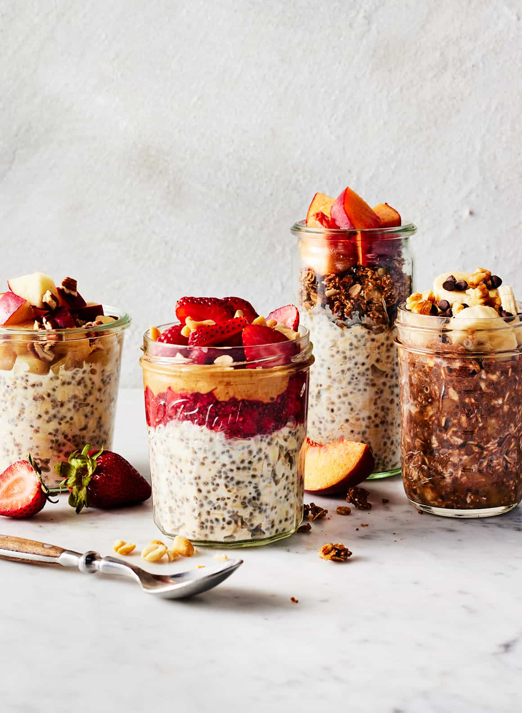

Healthy Breakfast Oats
297 calories

Oats Recipe Ingredients
- Whole rolled oats – Also known as old fashioned oats. Quick oats and steel-cut oats will NOT work here. Quick oats will be too mushy, while steel-cut oats will be chewy and tough.
- Chia seeds – For extra protein and the perfect thick and creamy texture.
- Almond milk – Or any milk you like! Dairy milk and oat milk both work well. Coconut milk adds rich flavor and yields an especially creamy texture.
- Maple syrup – For sweetness. Honey works too.
- And a pinch of salt – To make the oats extra-flavorful.
How to Make Overnight Oats
- Place the oats, chia seeds, maple syrup or honey, salt, and yogurt, if using, in a lidded container or jar.
- Pour in the almond milk, and stir thoroughly to combine. Make sure that there are no chia seeds clumped around the bottom or sides of the jar!
- Cover and store overnight, or for up to 5 days, in the fridge.
If you’re meal prepping overnight oats, set out a Mason jar for each serving you want to prep. Add all the ingredients EXCEPT the milk to each jar. Then, add the milk to one jar and stir that jar together before adding the milk to the next. I find that adding the milk to one jar at a time helps prevent the chia seeds from getting too clumpy. Once you mix up all the overnight oats, cover and refrigerate until you’re ready to eat!
I recommend waiting to add any toppings until the morning you plan to eat your oats. That way, nuts, seeds, and granola will stay crunchy, and fruit will stay bright and fresh.